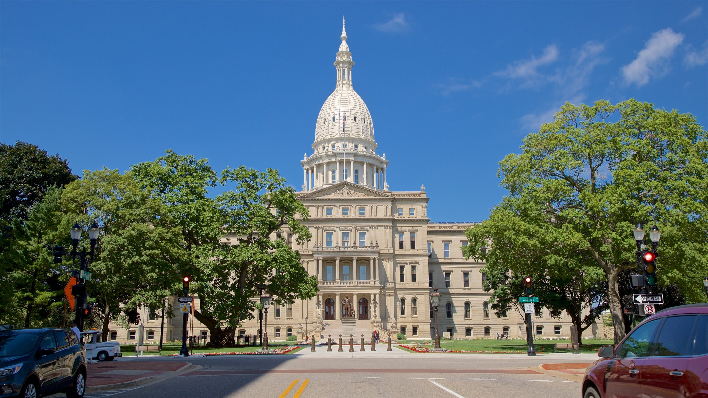

Discover the vibrant capital city of Michigan.
Welcome to Lansing, the vibrant heart of Michigan. Nestled in the midst of the state's scenic beauty, Lansing stands as a testament to Michigan's rich history and thriving culture. As the capital city, Lansing boasts a unique blend of urban sophistication and small-town charm. Explore the dynamic downtown area, where historic architecture blends seamlessly with modern innovation, and bustling streets are lined with an eclectic array of shops, restaurants, and cultural attractions. Dive into the city's rich cultural tapestry with visits to museums, galleries, and performance venues showcasing the best of Michigan's arts and heritage. Nature enthusiasts will delight in Lansing's extensive park system, offering ample opportunities for outdoor recreation and relaxation. Whether you're here for business or pleasure, Lansing welcomes you with open arms, inviting you to discover the warmth and vitality that define this remarkable city.
